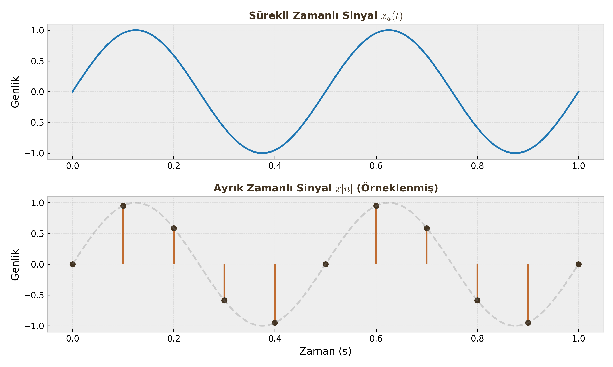
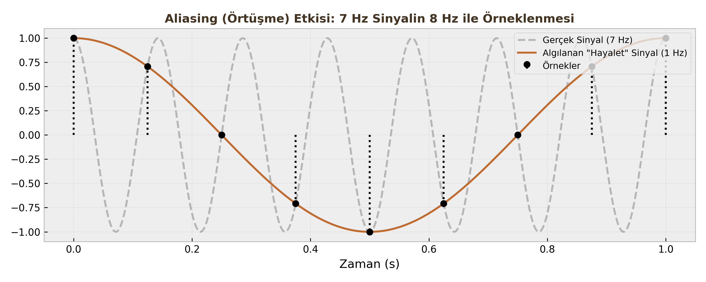

Örnekleme ve Geri Çatma (Sampling & Reconstruction)
Sayısal İşaret İşleme'nin var olabilmesi için önce gerçek dünyadaki sürekli (analog) sinyallerin bilgisayarın anlayacağı dile (dijital) çevrilmesi gerekir. Bu derste bir sinyalin nasıl dijitalleştirildiğini (A/D) ve işlem bittikten sonra tekrar nasıl analoğa çevrildiğini (D/A) inceleyeceğiz.
1. Analogdan Dijitale Geçiş (A/D Conversion)
Sürekli zamanlı bir sinyali ($x_a(t)$), bilgisayarda işleyebilmek için belirli zaman aralıklarıyla "fotoğrafını çekmemiz" gerekir. Bu işleme Örnekleme (Sampling) denir.
Temel Tanımlar
- Örnekleme Periyodu ($T_s$): İki örnek arasında geçen süre (saniye).
- Örnekleme Frekansı ($F_s$ veya $\Omega_s$): Saniyede alınan örnek sayısı (Hz veya rad/sn). $$F_s = \frac{1}{T_s} \quad \text{veya} \quad \Omega_s = \frac{2\pi}{T_s}$$
Matematiksel Model: İmpuls Dizisi
Örnekleme işlemi matematiksel olarak, sürekli sinyalin sonsuz bir Birim Dürtü Dizisi (Impulse Train) ile çarpılması olarak modellenir.
$$s(t) = \sum_{n=-\infty}^{\infty} \delta(t - nT_s)$$
Örneklenmiş sinyal ($x_s(t)$): $$x_s(t) = x_a(t) \cdot s(t) = \sum_{n=-\infty}^{\infty} x_a(nT_s) \cdot \delta(t - nT_s)$$
Buradan ayrık zamanlı diziye ($x[n]$) geçeriz: $$t \to nT_s \implies x[n] = x_a(nT_s)$$

2. Nyquist Teoremi (Sampling Theorem)
Bir sinyali örnekledikten sonra, hiçbir bilgi kaybetmeden tekrar orijinal haline ($x_a(t)$) döndürebilmemiz mümkün müdür? Harry Nyquist ve Claude Shannon'a göre cevap: EVET, ama bir şartla.
Teorem Şartı
Eğer analog sinyalin sahip olduğu en yüksek frekans bileşeni $\Omega_{max}$ (Bant genişliği) ise, örnekleme frekansımız $\Omega_s$ şu şartı sağlamalıdır:
$$\Omega_s \ge 2\Omega_{max}$$
Veya Hertz cinsinden: $F_s \ge 2F_{max}$.
Kritik Tanımlar
| Terim | Tanım |
|---|---|
| Nyquist Oranı (Rate) | Sinyali kurtarmak için gereken minimum hız ($2\Omega_{max}$). |
| Nyquist Frekansı | Kullandığımız örnekleme frekansının yarısı ($\Omega_s / 2$). Sinyalimizde bu değerden yüksek frekans olmamalıdır. |
Kritik Sınav Bilgisi
Sorularda "Nyquist Oranı nedir?" denildiğinde sinyalin frekansının 2 katını ($2F_{max}$), "Nyquist Frekansı nedir?" denildiğinde örnekleme hızının yarısını ($F_s/2$) kastettiklerini unutmayın. Bu ikisi sıkça karıştırılır.
3. Örtüşme (Aliasing)
Eğer Nyquist kuralına uymazsak, yani yetersiz örnekleme yaparsak ($\Omega_s < 2\Omega_{max}$) ne olur?
Cevap: Aliasing (Örtüşme) felaketi yaşanır.

Mekanizma Nasıl İşler?
Frekans domeninde örnekleme işlemi, sinyalin spektrumunun ($X(j\Omega)$) her $\Omega_s$ katında bir kopyasını oluşturmak demektir.
- Eğer $\Omega_s$ yeterince büyükse, bu kopyalar birbirinden ayrı durur (Güvenli Bölge).
- Eğer $\Omega_s$ küçükse, kopyalar birbirinin içine girer (Overlap).
Sonuç: Kimlik Karmaşası
Örtüşme olduğunda, yüksek frekanslı bir sinyal ($\Omega_0$), sanki daha düşük frekanslı başka bir sinyalmiş ($\Omega_0 - \Omega_s$) gibi görünür.
- Örnek (Wagon-Wheel Effect): Filmlerde araba tekerleklerinin geriye doğru dönüyormuş gibi görünmesi bir aliasing örneğidir. Kamera (örnekleyici), tekerleğin dönüş hızına (sinyal frekansı) yetişememektedir.
Öğrenci Notu
Aliasing olduktan sonra orijinal sinyali kurtarmak imkansızdır. Bilgi kalıcı olarak bozulmuştur. Bu yüzden A/D dönüştürücüden önce mutlaka bir "Anti-Aliasing Filtresi" (Analog Alçak Geçiren Filtre) kullanılır.
4. Geri Çatma (Reconstruction - D/A)
Elimizdeki dijital $x[n]$ dizisinden tekrar pürüzsüz $x_a(t)$ sinyaline dönme işlemidir.
İdeal Geri Çatma (Ideal Reconstruction)
Teorik olarak en mükemmel geri çatma yöntemi, örneklenmiş spektrumdaki kopyaları tıraşlayıp sadece merkezdeki orijinal spektrumu bırakan bir İdeal Alçak Geçiren Filtre (Ideal Low-Pass Filter) kullanmaktır.
Filtre Özellikleri
Bu filtrenin kesim frekansı ($\Omega_c$) ve kazancı ($T_s$) şöyle olmalıdır:
- Kesim Frekansı: Örnekleme frekansının tam ortası olmalıdır. $$\Omega_c = \frac{\Omega_s}{2}$$
- Genlik: Örnekleme sırasında genlik $1/T_s$ oranında ölçeklendiği için, filtre bunu dengelemek adına $T_s$ kazancına sahip olmalıdır.
Zaman Domeninde Karşılığı (Sinc İnterpolasyonu)
Frekans domeninde "İdeal Dikdörtgen Filtre" ile çarpmak, zaman domeninde Sinc Fonksiyonu ile konvolüsyon almak demektir. Yani, elimizdeki her bir örnek noktasının ($x[n]$) üzerine bir Sinc fonksiyonu oturtup bunları toplarsak, orijinal analog sinyali elde ederiz.
$$x_r(t) = \sum_{n=-\infty}^{\infty} x[n] \cdot \text{sinc}\left(\frac{\pi(t - nT_s)}{T_s}\right)$$
Bu formül, ayrık noktalardan sürekli eğriye geçişin (interpoasyonun) en mükemmel halidir.